Africa
54 paesi
Una presentazione in sette capitoli sul continente più giovane del pianeta: la terra, le persone, i tessuti, i luoghi e le lingue.
Inizia la presentazioneFrecce o barra spaziatrice per passare da un capitolo all'altro.
Tre volte
l'Europa
30,3
milioni di km², un quinto delle terre emerse
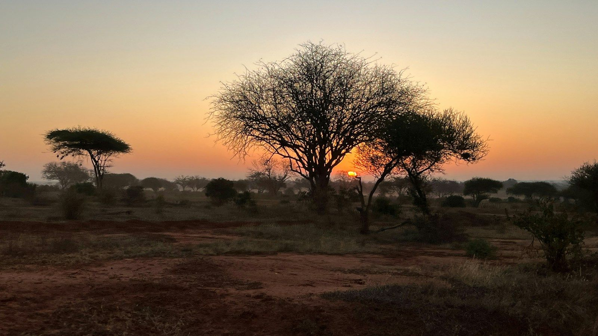
L'Africa copre 30,3 milioni di chilometri quadrati, circa un quinto delle terre emerse: dentro i suoi confini starebbero insieme Stati Uniti, Cina, India e buona parte dell'Europa. Le carte di Mercatore, che allargano le regioni vicine ai poli, la disegnano poco più grande della Groenlandia, che in realtà è quattordici volte meno estesa. Da Ras ben Sakka, in Tunisia, al Capo Agulhas, in Sudafrica, corre per circa 8.000 chilometri. È anche la terra più antica della nostra specie: i fossili di Jebel Irhoud, in Marocco, sono di Homo sapiens vissuti circa 300.000 anni fa.
1,5 miliardi
di persone nel 2024, quasi una su cinque al mondo.
Il continente giovane
19 anni
l'età mediana. In Italia è circa 48.
1 su 4
abitanti della Terra sarà africano nel 2050, secondo le proiezioni ONU.
Sabbia
e neve
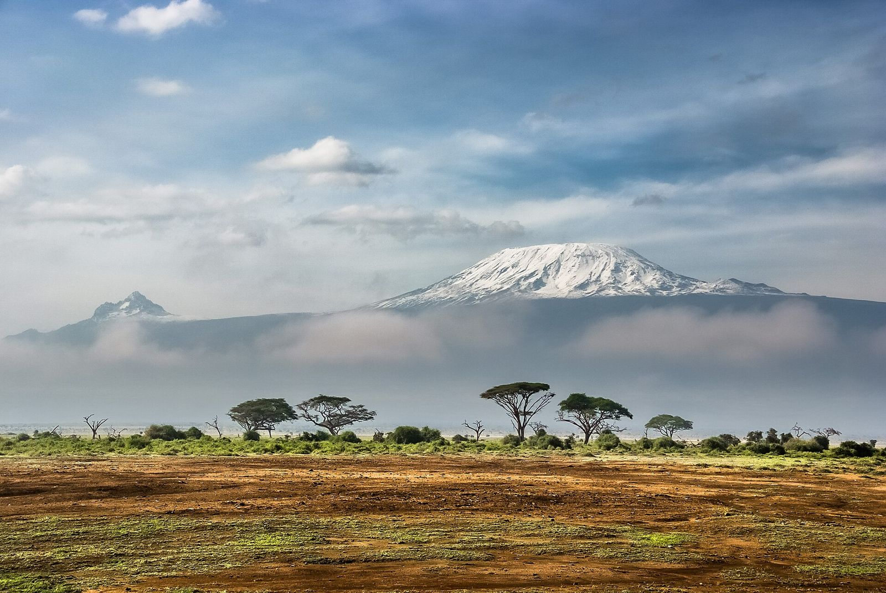
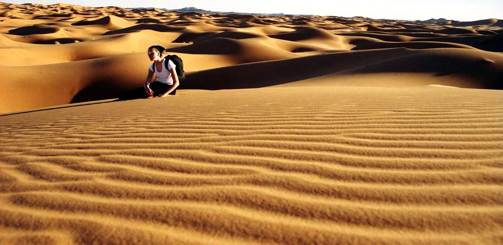
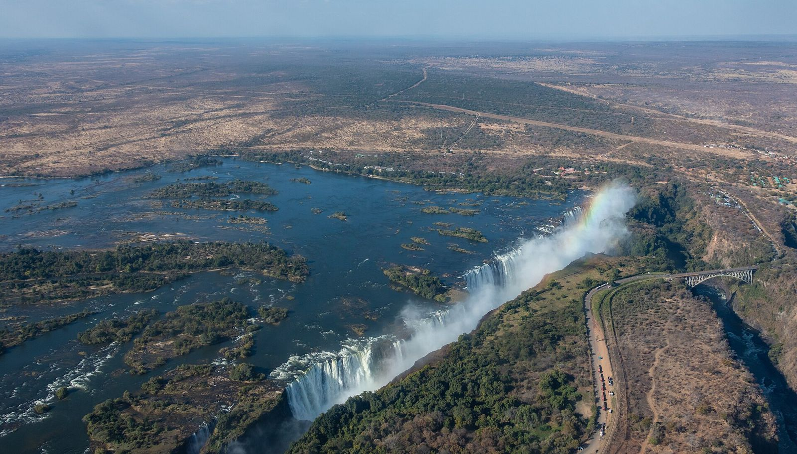
Il Sahara copre 9,2 milioni di km²; a 5.895 metri il Kilimanjaro conserva ancora i suoi ghiacciai.
Tessuti e maschere
-
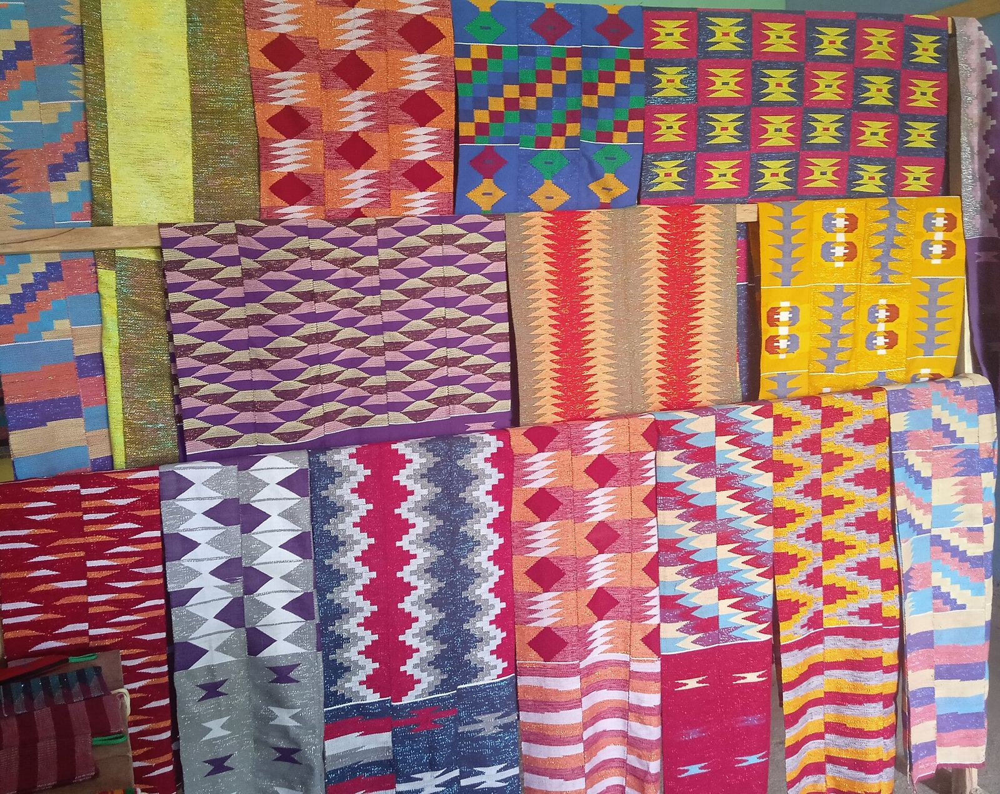
Kente
Ghana. Strisce larghe una mano, tessute su telai stretti e cucite fianco a fianco.
-
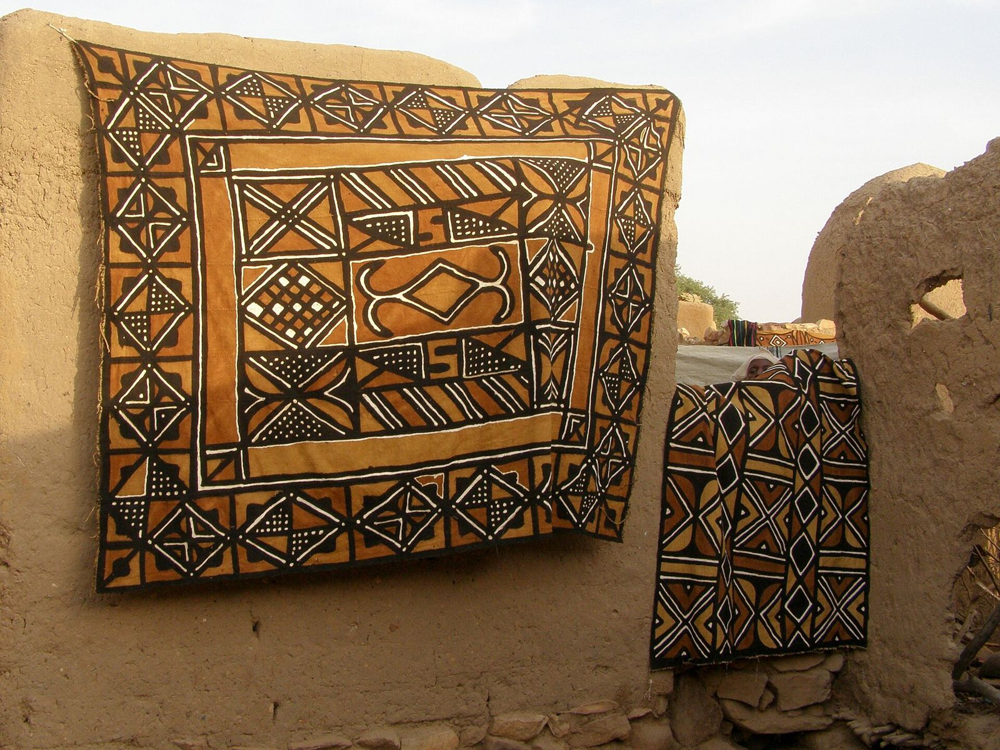
Bogolan
Mali. Cotone tinto con foglie bollite e dipinto con fango fermentato.
-
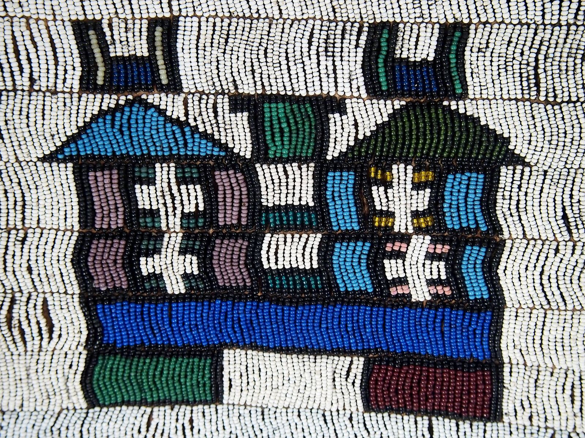
Perline Ndebele
Sudafrica. Gli stessi segni a gradini dipingono le facciate delle case.
-
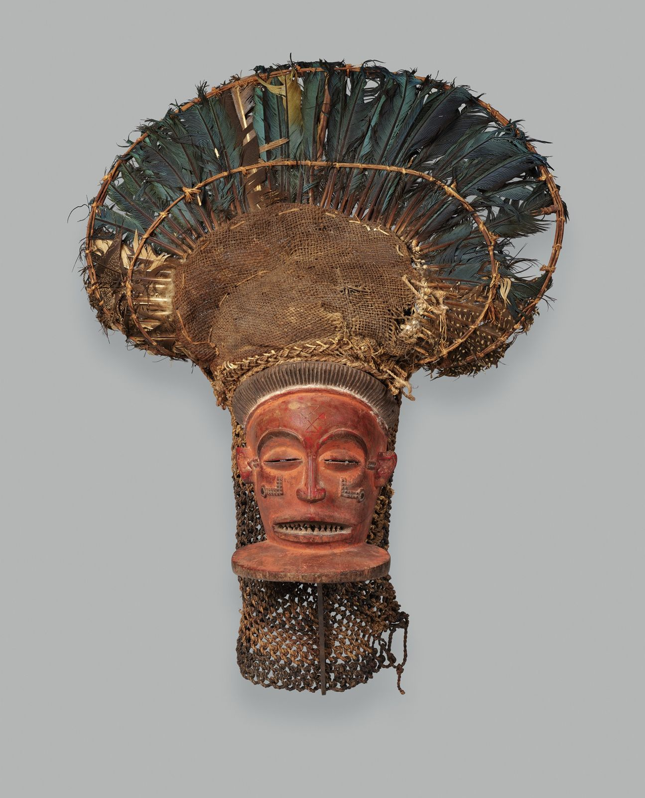
Maschera Chihongo
Chokwe, Angola, XIX secolo. Lo spirito della ricchezza e del potere.
-
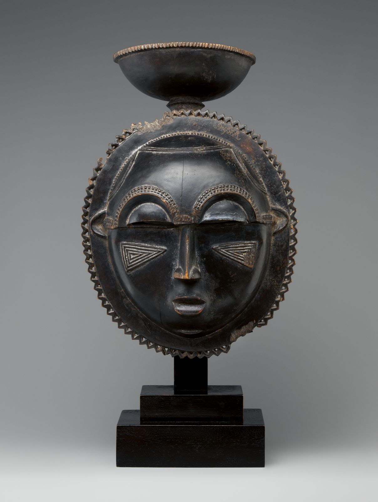
Maschera della luna
Baule, Costa d'Avorio. Danzata nel mblo, la festa della bellezza.
Sette luoghi da conoscere
Natura 4 luoghi
Sahara9,2 mln km²
Il deserto caldo più grande del mondo, dall'Atlantico al Mar Rosso, su una decina di paesi.
Kilimanjaro5.895 m
Vulcano isolato in Tanzania, la cima più alta d'Africa, visto qui dal parco di Amboseli in Kenya.
Cascate Vittoria108 m
Mosi-oa-Tunya, «il fumo che tuona», dove lo Zambesi precipita tra Zambia e Zimbabwe.
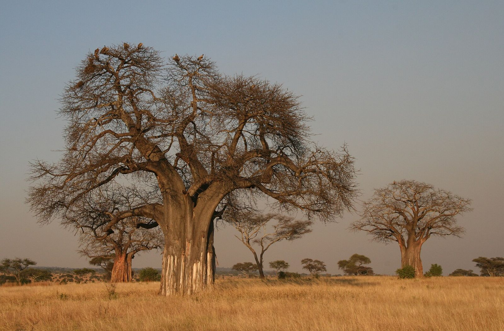
Baobaboltre 1.000 anni
Conserva l'acqua nel tronco per la stagione secca e può vivere più di mille anni.
Storia e città 3 luoghi
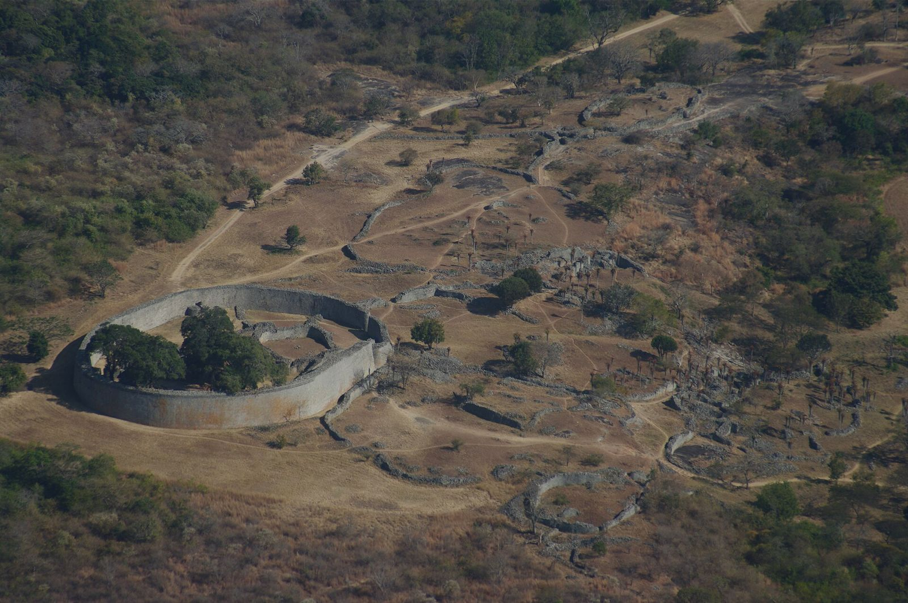
Grande ZimbabweXI–XV sec.
Capitale shona in pietra a secco, con le mura del Grande Recinto alte fino a 11 metri.
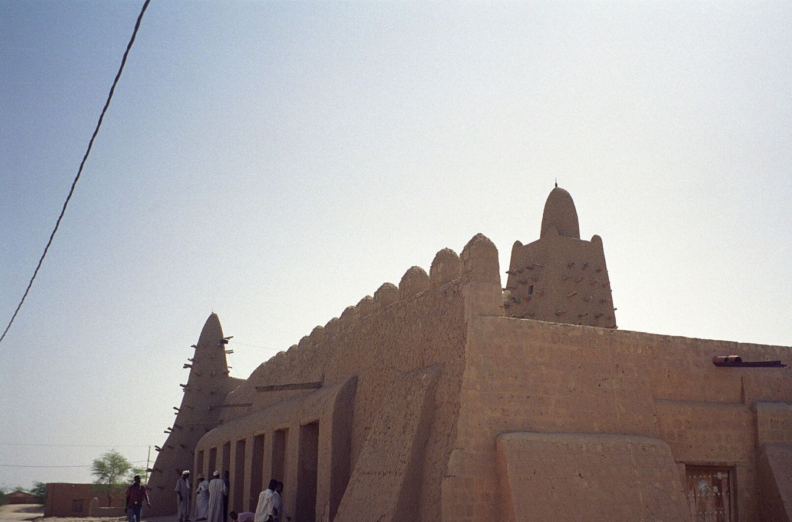
Timbuctù1327
La moschea Djinguereber, in terra cruda, voluta da Mansa Musa, re del Mali.
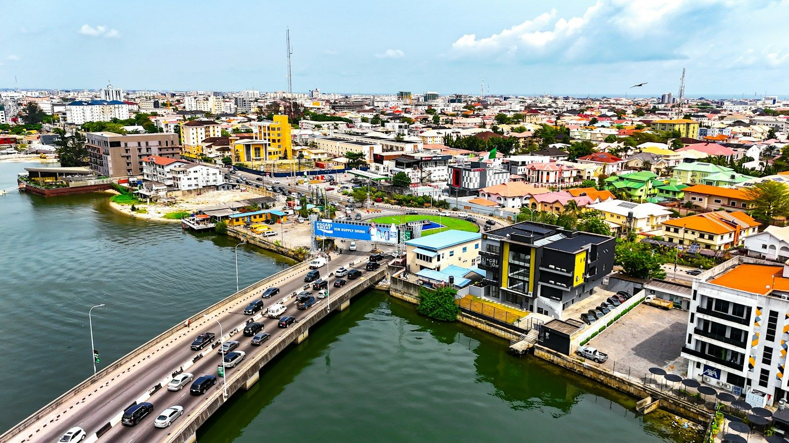
Lagosoltre 15 mln
La più grande città della Nigeria, tra la laguna e l'Atlantico, capitale della musica afrobeats.
Duemila lingue
In Africa si parlano oltre 2.000 lingue, quasi un terzo di quelle del mondo. Lo swahili unisce l'Africa orientale ed è usato da oltre cento milioni di persone; hausa, yoruba, amarico, zulu e oromo contano ciascuna decine di milioni di parlanti. Accanto a loro vivono l'arabo, il francese, l'inglese e il portoghese, eredità di commerci e di colonie. Dallo zulu e dallo xhosa viene una parola che riassume un modo di stare insieme: ubuntu, «io sono perché noi siamo». Dal 2021 l'Area di libero scambio continentale africana lega i suoi 54 paesi firmatari nel mercato comune più grande al mondo per numero di stati. Anche ogni striscia di kente ha un nome, e ogni colore un messaggio. Tessine una tua sul telaio.
Tessi la tua kente
Ogni colore della kente ha un significato. Scegli i fili e il motivo: la striscia diventa la fascia tra un capitolo e l'altro.
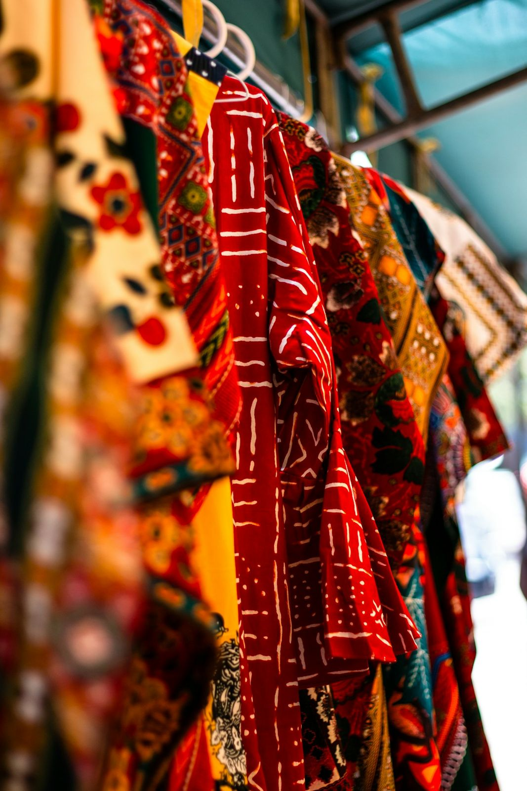